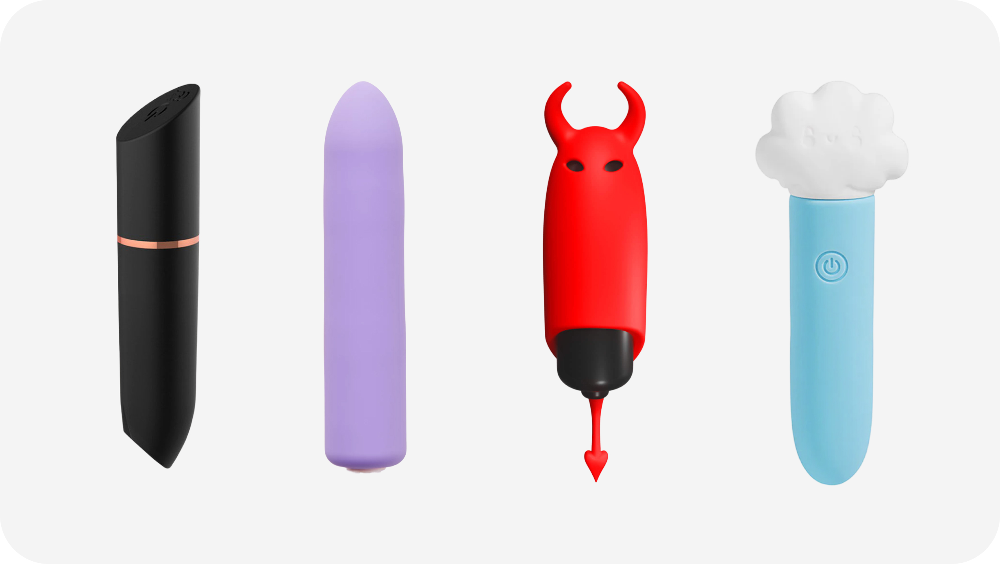

Вибропуля — небольшая виброигрушка продолговатой формы, по размеру обычно близкая к губной помаде. Чаще всего её используют для точечной стимуляции клитора, вульвы, сосков, уздечки пениса, мошонки и других индивидуальных эрогенных зон, а иногда как дополнительный источник вибрации в парных практиках. Компактность, простой внешний вид и понятное управление делают вибропулю одним из самых доступных и незаметных форматов, с которого удобно начинать знакомство с вибростимуляцией.
Разновидности
Вибропули различаются по длине, диаметру, мощности и способу включения. Есть совсем миниатюрные модели, которые легко спрятать в ладони или косметичке, и чуть более крупные варианты, дающие более ощутимую вибрацию за счёт усиленного мотора. По управлению встречаются игрушки с одной кнопкой на торце, с отдельным пультом, а также модели с возможностью настройки через приложение.
Наборы режимов варьируются от одного устойчивого уровня до нескольких скоростей и сложных ритмов, вроде пульсаций или нарастающих волн. Корпус может быть полностью гладким или с небольшим рельефом у носика для более акцентированного контакта. В качестве материалов обычно используют пластик с покрытием или силикон. Многие современные вибропули делают влагозащищёнными, чтобы их было проще мыть и в некоторых случаях использовать в душе.

Виды вибропуль
Как выбрать
При выборе вибропули стоит определиться, для каких зон она прежде всего нужна. Тем, кто предпочитает мягкие, не слишком резкие ощущения, часто подходят миниатюрные модели со средней мощностью и плавным увеличением интенсивности. Если хочется более выраженной вибрации, имеет смысл смотреть в сторону пулек чуть крупнее с хорошим мотором и несколькими скоростями. Размер важен ещё и с точки зрения удобства захвата: тонкий корпус легче разместить между пальцами, более широкий ощущается устойчивее в руке.
Дополнительные критерии — уровень шума, тип питания и покрытие. Для использования в спокойной домашней обстановке шум не всегда критичен, а вот для игр вне дома тише обычно комфортнее. В плане питания можно выбирать между батарейками и встроенным аккумулятором: первый вариант проще в замене, второй удобен с точки зрения экономии и экологии. Покрытие лучше выбирать приятное на ощупь, гипоаллергенное, без резких стыков и лишних зазоров, это делает контакт с телом комфортнее и облегчает очистку после.
Как использовать
Перед началом можно нанести немного лубриканта на водной основе на ту область, где планируется стимуляция, особенно если кожа чувствительная. Вибропулю удобно включать на самой слабой мощности, подносить к телу и уже затем постепенно менять интенсивность и положение. Её прикладывают к клитору, ведут по краю малых половых губ, двигают по линии промежности, используют на сосках или других чувствительных участках тела, экспериментируя с углом наклона и силой прижатия.
Игрушка хорошо вписывается и в парные сценарии: её можно подключать во время оральных ласк, проникновения, массажа, передавая управление партнёру. Компактный размер позволяет удерживать вибропулю между телами или под бельём, если хочется добавить легкую фоновую вибрацию.
После завершения использования её нужно промыть тёплой водой с мягким мылом или специальным средством, внимательно очищая зону вокруг стыков и кнопки, затем высушить и убирать в сухой чистый чехол или коробочку.
Заключение
Вибропуля — простой и при этом функциональный формат, который легко адаптировать под разные сценарии: от аккуратных проб с вибрацией до регулярного использования в сольных и совместных практиках. Удачный выбор по размеру, мощности и управлению делает её удобным инструментом для изучения собственных реакций и добавления новых акцентов к привычным ласкам.